Während der Ausbildung haben wir bereits mehrere Programmier- bzw. Skriptsprachen wie beispielsweise Java, Python, SQL und HTML/CSS kennengelernt.
Dafür wurden uns folgende IDEs vorgestellt: IntelliJ, Eclipse, Visual Studio Code.
Sehen Sie hier einige Projekte, an denen ich während der Umschulung gearbeitet habe.
Code können Sie sich in meiner GitHub anschauen.
Link zu meinem GitHubUm prozenten leichter zu berechnen habe ich das folgende Programm im Java geschrieben.
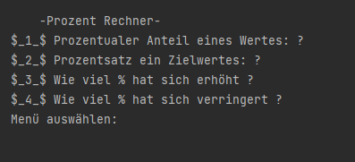 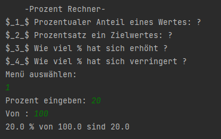 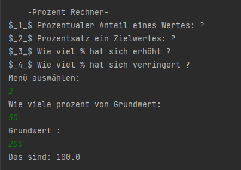 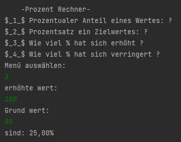 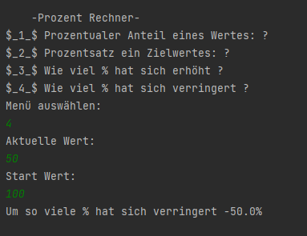Wir fahren heutzutage mehr und mehr Autos dafür habe ich mir ausgedacht ein Kraftstoffrechner zu programmieren, um das Geld für Sprit pro Monat zu verfolgen.
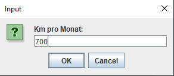 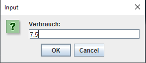 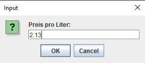 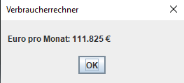Mit Hilfe das Java habe ich mir ausgedacht ein einfacher check Tag Programm
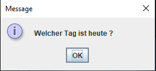 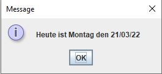Wie oft fragt sich man wie viel würde er gewinnen, wenn er Geld in der Bank anlegen würde? Leider „viel“ ist nicht der Antwort aber aus Interesse habe ich das folgende Programm geschrieben.
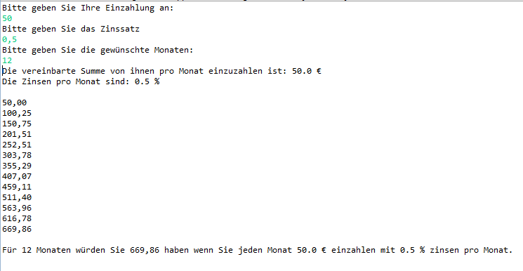"Jeder Mensch mit einer neuen Idee ist ein Spinner. Bis die Idee Erfolg hat."- Mark Twain
"Erfolg ist die Fähigkeit, von einem Misserfolg zum anderen zu gehen, ohne seine Begeisterung zu verlieren."- Winston Churchill
"Niemand weiß, was er kann, bis er es probiert hat."- Publilius Syrus